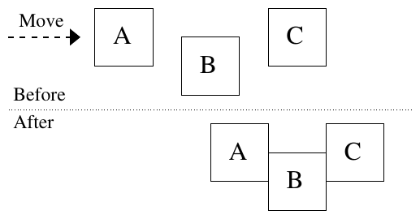

ACM-ICPC World Finals 2015 · Problem M
The past few years have seen a revolution in user interface technology. For many years, keyboards and mice were the tools used to interact with computers. But with the introduction of smart phones and tablets, people are increasingly using their computers by tapping and moving their fingers on the screen. Naturally this has led to new paradigms in user interface design. One important principle is that objects on the display obey “physical” laws. In this problem, you will see an example of this.
You have been hired to build a simulator for the window manager to be used in the next generation of smart phones from Advanced Cellular Manufacturers (ACM). Each phone they produce will have a rectangular screen that fully displays zero or more rectangular windows. That is, no window exceeds the boundaries of the screen or overlaps any other window. The simulator must support the following commands.
OPEN x y w h — open a new window with top-left corner coordinates
(x, y), width w pixels and height h pixels.CLOSE x y — close an open window that includes the pixel at
(x, y). This allows a user to tap anywhere on a window to close it.RESIZE x y w h — set the dimensions of the window that includes the pixel at
(x, y) to width w and height h. The top-left corner of the window does
not move.MOVE x y dx dy — move the window that includes the pixel at
(x, y). The movement is either dx pixels in the horizontal direction or
dy pixels in the vertical direction. At most one of dx and dy will be
non-zero.The OPEN and RESIZE commands succeed only if the resulting window does
not overlap any other windows and does not extend beyond the screen boundaries. The
MOVE command will move the window by as many of the requested pixels as possible. For
example, if dx is 30 but the window can move only 15 pixels to the right, then it will move 15
pixels.
ACM is particularly proud of the MOVE command. A window being moved might
“bump into” another window. In this case, the first window will push the second window in
the same direction as far as appropriate, exactly as if the windows were physical objects. This
behavior can cascade – a moving window might encounter additional windows which are also pushed
along as necessary. Figure M.1 shows an example with three windows, where window A is moved to the
right, pushing the other two along.

The first line of input contains two positive integers xmax and ymax, the horizontal and vertical dimensions of the screen, measured in pixels. Each is at most 109 (ACM is planning on building displays with very high resolution). The top-left pixel of the screen has coordinates (0, 0). Each of the following lines contains a command as described above. One or more spaces separate the command name and the parameters from each other. The command parameters are integers that satisfy these conditions: 0 ≤ x < xmax, 0 ≤ y < ymax, 1 ≤ w, h ≤ 109, and |dx|, |dy| ≤ 109. There will be at most 256 commands.
The output must follow the format illustrated in the sample output below. Simulate the commands in the order they appear in the input. If any errors are detected during a command’s simulation, display the command number, command name, and the first appropriate message from the following list, and ignore the results of simulating that command (except as noted).
no window at given position — for the CLOSE,
RESIZE, and MOVE commands — if there is no window that includes
the pixel at the specified position.window does not fit — for the OPEN and
RESIZE commands — if the resulting window would overlap another window or
extend beyond the screen boundaries.moved d0 instead of d — for the MOVE command
— if the command asked to move a window d pixels, but it could only move
d0 pixels before requiring a window to move beyond the screen boundaries. The
values d and d0 are the absolute number of pixels requested and moved,
respectively. The window is still moved in this case, but only for the smaller distance.After all commands have been simulated and any error messages have been displayed, indicate the number of windows that are still open. Then for each open window, in the same order that they were opened, display the coordinates of the top-left corner (x, y), the width, and the height.
320 200 OPEN 50 50 10 10 OPEN 70 55 10 10 OPEN 90 50 10 10 RESIZE 55 55 40 40 RESIZE 55 55 15 15 MOVE 55 55 40 0 CLOSE 55 55 CLOSE 110 60 MOVE 95 55 0 -100
Command 4: RESIZE - window does not fit Command 7: CLOSE - no window at given position Command 9: MOVE - moved 50 instead of 100 2 window(s): 90 0 15 15 115 50 10 10